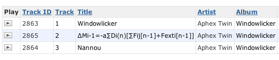

How hard can music metadata be?
Anyone who has worked with a large music collection knows that there are all sorts of difficulties in dealing with the metadata that is associated with the music. The data is often wrong, misspelled, or missing. Getting the metadata right is a hard problem to solve even with common songs (should "Hey Jude!" have an exclamation point or not?) or artists (Is it 'Prodigy' or 'The Prodigy'?). Some artists however seem to go out of their way to make things difficult. Take our friend Aphex Twin - on his album Windowlicker, track number two is called:
"ΔMi−1 = −αΣn=1NDi[n][Σj∈C{i}Fji[n − 1] + Fexti[[n−1]]"
I wondered how some of the various Music 2.0 sites were able to handle this track - here are my findings.
First, here's the song in the iTunes store - they don't even try to render it
Amazon.com does a bit better, they don't try to render the mathematical characters, but it is readable:

iLike falls back on the streetname for the song

Google skips the track completely:

As does All Music:

There are some that get it right - MusicBrainz for one:

Our Search Inside the Music research database (curated by Doug Eck) gets it right too, no surprise since we resolve our music against musicbrainz:

As does last.fm (I think they resolve against MusicBrainz too):

Spotify gets it right too:

So it looks like about 1/3 of the sites got it right, and those are the ones that are using MusicBrainz to clean up their Metadata. This is one of the many reasons why I really like MusicBrainz .
And by the way, this track is also noted for the fact that Aphex Twin has embedded his image in the audio. An FFT of the track reveals his mug
Posted by The Bytesize Music Blog on March 27, 2008 at 12:06 PM EDT #
Discogs seems to get it right as well:
http://www.discogs.com/release/19290
http://www.discogs.com/release/3666
In my experience I don't think I've ever had a CD with CD-text anything like the standard I would want for ripping to MP3. If labels made more of an effort in that area it would at least be a start. If they submitted good metadata to freedb that would probably improve the quality of a lot of the metadata in the wild too. I guess the problem is that the labels don't see much incentive to do it.
Last.fm's work in the area with its fingerprinting is looking very promising, but somebody somewhere has got to be doing accurate data entry.
Posted by Sam Prince on March 28, 2008 at 11:50 AM EDT #
"And by the way, this track is also noted for the fact that Aphex Twin has embedded his image in the audio. An FFT of the track reveals his mug"
This is crazy !
Posted by modjibe on March 31, 2008 at 01:28 PM EDT #